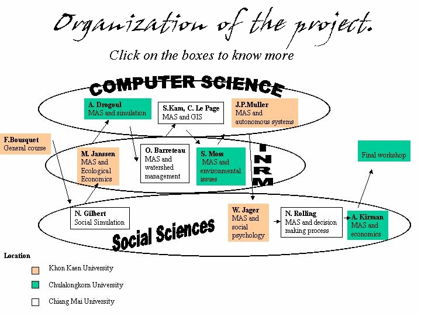

|

Multi-Agent Systems (MAS),
Social Sciences and
Integrated Natural Resource Management (INRM)
Objective
The objective of this project is to organise a course in a university
context to explore and to transfer know-how on MAS. The activity area
is agriculture - modelling, information systems, research and environmental
system - and society - quality of life. The course will be organised as
a set of teaching sessions (taught courses and workshops), given by experts
in the field of computer science and application of MAS to social science
and INRM.
The objectives of the training course are:
- to introduce multi-agents systems (MAS) and review the state of the
art in applying MAS to several key scientific disciplines, with an emphasis
on natural resources management (NRM) issues,
- to enable participants to develop their own simple MAS application
by constructing and operating a MAS on a topic of their choice,
- to identify future opportunities for developing the use and application
of the MAS approach to key NRM issues in the region.

Organisation of the course
The preparation of the project will involve short seminars in Asian universities
to disseminate the information on planned project activities, the preparation
of different training courses, the construction and improvement of the
web site, synthesis of the materials and preparation of a manual. There
will also be a course to introduce multi-agent systems and a review of
the state of the art in applying MAS to several key scientific disciplines,
with an emphasis on social sciences and INRM issues. Then there will follow
a set of ten training courses to improve the level of understanding and
mastering on MAS methodology and its application:
- The use of simulation for the exploration and understanding of social
and economic issues
- MAS and the development of integrated models of ecological systems
and the use of these models for the management of resilience of ecological
systems.
- MAS methodology and its application in simulation.
- MAS and integrated watershed management
- The linkages between MAS and GIS (Geographical Information Systems)
- MAS and environmental issues: European experiences.
- Artificial Intelligence techniques for MAS
- MAS and social psychology for the modelling of individual behaviour
of social agents
- MAS and the decision-making process in participatory approaches,
- MAS and the foundations of decentralized economics
Schedule and Location
The overall objective is to provide a full training on MAS and INRM.
Thus it is expected that the participants attend almost all courses. Nevertheless,
other participants could be allowed to attend selected courses. The courses
will be organized in Chiang mai, Khon Kaen, and Chulalongkorn University
in Bangkok.
|
|